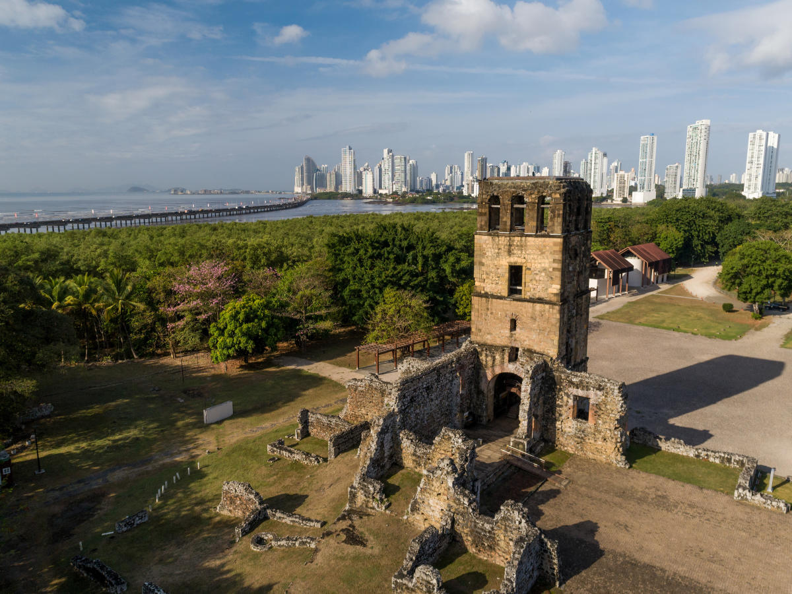

AmericaGo
Panama
Panamá es un país ubicado en Centroamérica. Está constituido por 10 provincias. El turismo es una de las principales actividades del país. Cuenta con múltiples áreas arqueológicas y su turismo se basa principalmente en las playas y el comercio, siendo su principal atracción el Canal de Panamá.
El Canal de Panama
Al hablar del Canal de Panamá, nos referimos a una vía de navegación marítima de suma importancia a nivel mundial. Terminado en 1913 y utilizado por primera vez en 1914, este canal conecta dos océanos, el Atlántico y el Pacífico. Todo esto es posible gracias a un complejo sistema de esclusas en cada extremo, que elevan y descienden a los barcos a través del lago Gatún. Este canal cuenta con varios miradores en distintas ubicaciones. El Centro de Visitantes de Miraflores también cuenta con un museo donde se narra la historia del canal, todo por un precio de 1,50 a 3,00 dólares para nacionales y 7,00 a 17,00 dólares para no residentes. También existe otro centro de visitas en Agua Clara, donde también se pueden observar los barcos que atraviesan el canal. Si desea conocer los horarios de paso de los barcos, estos suelen pasar por los miradores entre las 8:00 a. m. y las 4:30 p. m., aproximadamente.
Panama Viejo

Panamá Viejo es un sitio arqueológico ubicado prácticamente en la ciudad de Panamá. Originalmente fue fundada en 1519 hasta 1671 donde, debido a saqueos, desapareció. Su nombre oficial fue Nuestra Señora de Asunción de Panamá. En esta ubicación, puedes explorar las distintas ruinas que alguna vez formaron parte de una compleja sociedad española. Notarás que uno de los lugares más importantes fue la Catedral Primada Basílica Santa María la Antigua de Panamá, que también sirvió como mirador, este podría ser un buen lugar para comenzar. También cuenta con un museo y una tienda de artesanías donde podrás observar la historia de Panamá Viejo, desde su fundación, hasta los saqueos de Henry Morgan que llevaron a su eventual desaparición.